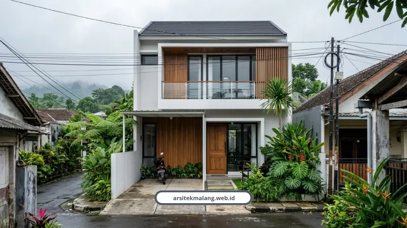

Ringkasan Inti
- Konsep compact house dan open plan menjadi solusi paling presisi untuk mengoptimalkan kavling terbatas (6x10 hingga 6x12 meter) di Malang Raya.
- Tujuh strategi tata ruang teruji: open plan tanpa sekat masif, split level vertikal, skylight lebar, furnitur built-in bawah tangga, palet cerah bercermin, pintu geser, dan inner courtyard.
- Filosofi tropis modern minimalis mengutamakan ventilasi silang dan cerobong void hawa agar hunian tetap adem alami sepanjang tahun tanpa bergantung pada AC terus-menerus.
- Gambar kerja DED terstandarisasi arsitek berlisensi IAI & STRA menjamin perizinan PBG lolos verifikasi SIMBG Pemkot maupun Pemkab Malang.
- Didukung transparansi RAB mengikat tanpa biaya siluman, garansi struktur 100%, serta durasi rancang efisien 2–4 minggu.
Daftar Isi Artikel
- Kenapa Cari Rumah di Malang Sekarang Serba Bikin Pusing?
- Kenapa Konsep Compact House Jadi Solusi Paling Masuk Akal di Malang?
- Gimana Caranya Lahan Sempit Bisa Terasa Jauh Lebih Luas?
- Kenapa RAB dan Legalitas PBG Nggak Boleh Dianggap Remeh?
- Fasad dan Material Rumah Minimalis di Malang Sebaiknya Seperti Apa?
- Kenapa Harus Pilih Arsitek Malang untuk Wujudkan Rumah Impian?
- FAQ Seputar Desain Rumah Minimalis Malang
Desain rumah minimalis Malang yang tepat untuk lahan terbatas adalah konsep compact house dengan open plan dan bukaan cahaya alami. Kami merancang tata ruang presisi supaya rumah kecil tetap lega, terang, dan sejuk tanpa harus menyalakan AC seharian.
Kenapa Cari Rumah di Malang Sekarang Serba Bikin Pusing?
Harga lahan di Malang Raya terus naik, terutama di area Lowokwaru, Sukun, Kedungkandang, sampai Dau dan Lawang. Banyak keluarga muda akhirnya cuma dapat kavling 6x10 meter, tapi tetap pengin rumah nyaman untuk 2 sampai 3 anak.
Di sinilah desain rumah minimalis malang yang presisi jadi penentu. Salah rancang sedikit saja, rumah kecil bisa terasa sumpek, gelap, dan pengap sepanjang hari.
Kenapa Konsep Compact House Jadi Solusi Paling Masuk Akal di Malang?
Compact house adalah pendekatan arsitektur yang fokus pada fleksibilitas ruang, pemanfaatan area vertikal, desain pasif hemat energi, dan efisiensi material.
Konsep ini dikaji secara akademis oleh Syahrozi dkk dari Universitas Palangka Raya sebagai jawaban atas keterbatasan lahan perkotaan.
Elias Vance, Kepala Arsitek kami dengan pengalaman lebih dari 20 tahun merancang skyline dan hunian presisi, selalu menekankan satu hal ke setiap klien.
"Rumah kecil bukan berarti harus terasa kecil. Yang bikin sesak itu bukan luasnya, tapi cara sirkulasi udara dan cahayanya dikelola," ujar Elias.
Filosofi ini kami sebut tropis modern minimalis. Ventilasi silang, skylight, dan void cerobong udara jadi tiga elemen wajib supaya rumah tetap sejuk secara alami sepanjang tahun.

Gimana Caranya Lahan Sempit Bisa Terasa Jauh Lebih Luas?
Ada tujuh trik yang konsisten kami pakai untuk memaksimalkan lahan sempit di Malang. Semua sudah teruji di lebih dari seratus proyek kami:
- Open plan tanpa sekat masif, ruang tamu, keluarga, dan dapur menyatu supaya udara dan cahaya mengalir bebas.
- Optimasi ruang vertikal dan split level, cocok untuk lahan miring di kawasan Dau atau Sengkaling.
- Jendela kaca lebar dan skylight untuk menyebarkan cahaya matahari sampai ke area tengah rumah.
- Furnitur multifungsi dan built-in custom, misalnya kabinet TV yang menyatu di ceruk bawah tangga.
- Palet warna cerah dipadukan cermin dinding besar untuk efek kedalaman optik.
- Pintu geser atau lipat supaya area bukaan tidak memakan ruang seperti pintu ayun biasa.
- Inner courtyard atau dry garden di lahan sisa, minim perawatan tapi bikin rumah tetap adem.
Kalau butuh gambaran konkret, kami pernah membahas tuntas inspirasi denah rumah minimalis di lahan 6x12 meter lengkap dengan siasat sirkulasi udaranya. Layout ini juga bisa disesuaikan untuk kavling yang lebih kecil seperti 6x10 meter.
Catatan Arsitek Malang
Memaksimalkan lahan sempit bukan berarti memadatkan seluruh bidang tanah dengan dinding masif. Sisakan minimal 10–15% area kavling untuk void atau inner courtyard terbuka; sirkulasi udara vertikal inilah yang membebaskan hunian dari kesan pengap sekaligus menghemat listrik AC jangka panjang.
Kenapa RAB dan Legalitas PBG Nggak Boleh Dianggap Remeh?
Banyak proyek rumah molor dan membengkak biayanya bukan karena materialnya mahal, tapi karena perencanaan awal yang asal-asalan. Rincian Rencana Anggaran Biaya yang presisi wajib ada sebelum tukang mulai kerja.
Marcus Thorne, Kepala Rekayasa dan Struktur kami, memastikan setiap dokumen teknis atau DED sudah sesuai standar sebelum diajukan.
"Kekuatan struktur itu nomor satu, apapun kondisi tanahnya. Tapi legalitas juga sama pentingnya, karena rumah yang bagus tapi izinnya bermasalah cuma jadi beban di kemudian hari," kata Marcus.
Tim kami didukung arsitek bersertifikat IAI dan berlisensi STRA, jadi dokumen DED dijamin lolos verifikasi Persetujuan Bangunan Gedung lewat sistem SIMBG Pemkot maupun Pemkab Malang.
Untuk pemilik lahan di daerah lereng seperti Batu, kami juga menangani perhitungan retaining wall dan split-level supaya struktur tetap aman meski kontur tanahnya menantang.
Fasad dan Material Rumah Minimalis di Malang Sebaiknya Seperti Apa?
Iklim Malang yang lembap dan curah hujannya tinggi bikin pemilihan fasad tidak bisa asal ikut tren. Kami sudah merangkum material eksterior yang tahan cuaca khas Malang, mulai dari kayu solid sampai cat anti jamur, plus contoh fasad rumah minimalis modern yang sudah kami eksekusi langsung di lapangan.
Pemilik rumah lama yang ingin modernisasi fasad juga bisa pakai pendekatan yang sama tanpa perlu membongkar struktur utama.
Kenapa Harus Pilih Arsitek Malang untuk Wujudkan Rumah Impian?
Kami sudah menangani lebih dari 150 proyek di Malang Raya selama lebih dari 10 tahun, dengan tingkat kepuasan klien mencapai 98 persen. Setiap pengerjaan konstruksi kami sertai garansi struktur 100 persen.
Sarah Chen, Manajer Proyek kami, yang mengawal setiap pekerjaan dari cetak biru sampai finishing, memastikan tidak ada progres yang jalan tanpa laporan jelas ke klien.
Beberapa klien kami juga cerita langsung soal pengalaman mereka:
"Hasil desain rumah kami sangat memuaskan, tim sangat responsif dan pembangunan selesai tepat waktu."
— Budi Santoso, Pemilik Rumah di Malang"Renovasi rumah lama kami jadi tampak modern seperti rumah baru, sudah 3 tahun dan kualitasnya tetap terjaga."
— Maya Sari, Pemilik Rumah di Batu"Transparansi RAB dan laporan progres berkala membuat kami tenang selama proses pembangunan."
— Rizky Hermawan, Manager PT Maju BersamaRumah kecil yang direncanakan dengan benar justru bisa terasa jauh lebih luas daripada rumah besar yang asal bangun. Kuncinya ada di tata ruang, bukaan cahaya, dan perhitungan struktur yang presisi sejak awal.
Kalau Anda punya lahan terbatas di Malang Raya dan pengin desain yang benar-benar dipikirkan matang, tim kami siap bantu dari konsultasi awal sampai rumah berdiri. Cek layanan lengkap kami di sini dan mulai konsultasi gratis via WhatsApp atau kunjungi kantor kami.
FAQ Seputar Desain Rumah Minimalis Malang
Berapa Lama Waktu yang Dibutuhkan untuk Desain Rumah Minimalis di Malang?
Proses desain awal sampai gambar kerja biasanya memakan waktu 2 sampai 4 minggu, tergantung kompleksitas denah dan cepat lambatnya revisi dari klien. Waktu ini belum termasuk proses pengurusan PBG via SIMBG yang standarnya maksimal 14 hari kerja setelah berkas lengkap.
Apakah Rumah Minimalis di Lahan Sempit Tetap Bisa Punya 3 Kamar Tidur?
Bisa, asal tata ruangnya dirancang vertikal dan efisien sejak awal. Kavling 6x10 atau 6x12 meter masih bisa dikembangkan sampai 2 lantai dengan 3 kamar tidur tanpa mengorbankan ruang keluarga.
Apakah Desain Rumah Minimalis Otomatis Lebih Murah dari Rumah Bergaya Lain?
Tidak selalu, karena biaya lebih ditentukan oleh spesifikasi material dan kompleksitas struktur, bukan gaya arsitekturnya. Tapi desain minimalis biasanya lebih efisien karena ornamen tempelan yang rumit dipangkas habis.
Siap Wujudkan Rumah Minimalis Impian di Malang?
Diskusikan kebutuhan tata ruang lahan sempit, visual 3D photorealistic, RAB transparan, dan pengurusan legalitas PBG bersama tim arsitek berlisensi kami.

Naura Regyna Putri
Penulis & Tim Riset Arsitektur Maroon Arsitek Malang, spesialis perencanaan tata ruang compact house, efisiensi fasad minimalis, dan legalitas izin PBG/SIMBG.